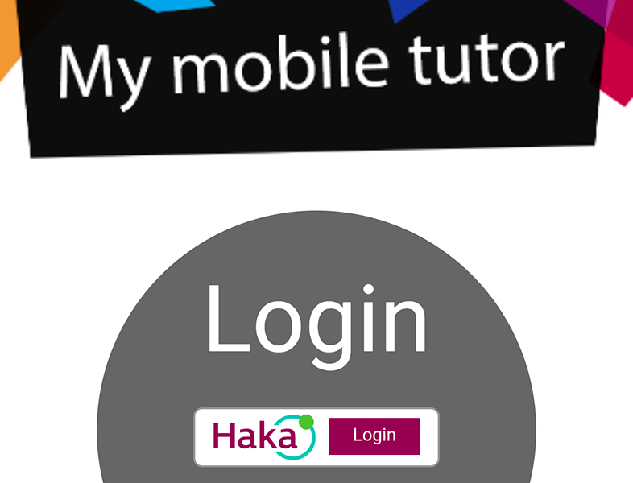
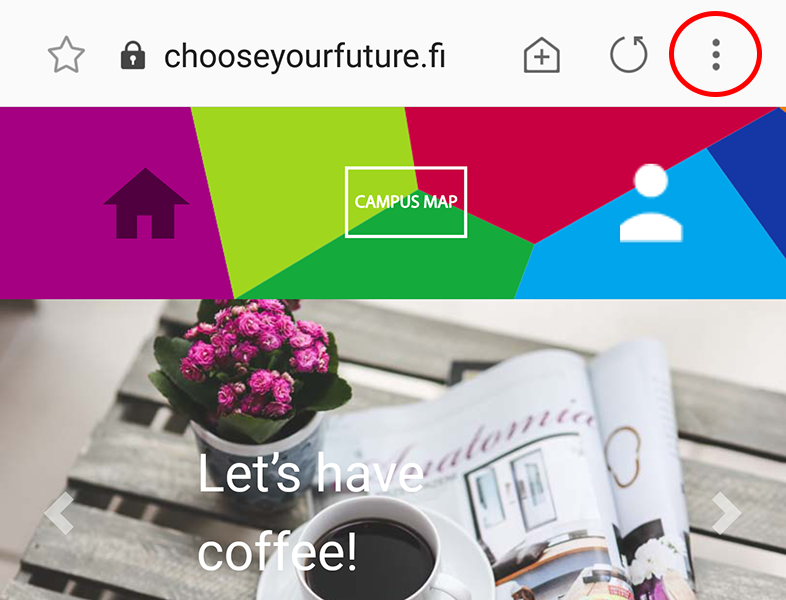
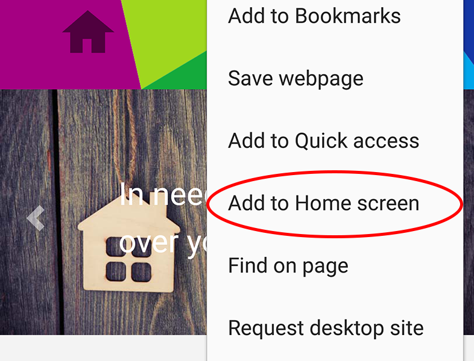

Lue Androidin latausohjeet alta.
Read the Android download instructions below.
LATAA - DOWNLOAD
Lataamalla ja käyttämällä mobiilisovellusta hyväksyt käyttöehdot ja olet tutustunut tietosuojaselosteeseen.
By downloading and using the app you accept the Terms of Service and you have read the Privacy Policy.
LATAUSOHJEET - DOWNLOAD INSTRUCTIONS
1. Kun olet painanut yllä olevaa ‘Lataa - Download’ nappia, kirjaudu sisään UTU-käyttäjätunnuksellasi painamalla 'Haka Login'. Käytäthän laitteesi oletusselainta.
Jos sovellus kysyy, lisätäänkö My Mobile Tutor aloitusnäyttöön, valitse 'Lisää'. Sovelluksen ikoni ilmestyy puhelimesi aloitusnäytölle ja on valmiina käyttöön.
Jos kysymystä ei näy, seuraa näitä ohjeita.
1. After pushing the ‘Lataa - Download’ button above, log in with your UTU username by pushing 'Haka Login'. Remember to use your device's default browser.
If the app asks to add My Mobile Tutor to Home screen, choose 'Add'. The app icon appears to your screen and is ready to use. If the question doesn't appear, please follow these instructions.
Jos sovellus kysyy, lisätäänkö My Mobile Tutor aloitusnäyttöön, valitse 'Lisää'. Sovelluksen ikoni ilmestyy puhelimesi aloitusnäytölle ja on valmiina käyttöön.
Jos kysymystä ei näy, seuraa näitä ohjeita.
1. After pushing the ‘Lataa - Download’ button above, log in with your UTU username by pushing 'Haka Login'. Remember to use your device's default browser.
If the app asks to add My Mobile Tutor to Home screen, choose 'Add'. The app icon appears to your screen and is ready to use. If the question doesn't appear, please follow these instructions.
2. Klikkaa osoiterivin oikealta puolelta Asetukset-kuvaketta (kolme pistettä).
2. Push the Settings button on the upper right corner (three points).
2. Push the Settings button on the upper right corner (three points).
3. Paina ‘Lisää alkunäyttöön’ ja sovelluksen ikoni ilmestyy puhelimesi aloitusnäytölle. Sulje selain ja aloita sovelluksen käyttö klikkaamalla ikonia.
Sovellus on oletuksena englanninkielinen. Pääset vaihtamaan kielen Profiili-osiosta.
3. Push 'Add to Home screen' button and the app icon appears to your screen. Close the browser and start using the app by clicking the icon.
The app is in English as a default. You can change the language in your Profile.
Sovellus on oletuksena englanninkielinen. Pääset vaihtamaan kielen Profiili-osiosta.
3. Push 'Add to Home screen' button and the app icon appears to your screen. Close the browser and start using the app by clicking the icon.
The app is in English as a default. You can change the language in your Profile.
Tarvitsetko apua sovelluksen lataamisessa? Ota yhteyttä info[at]cyf.fi.
Need help in downloading? Contact us at info[at]cyf.fi.